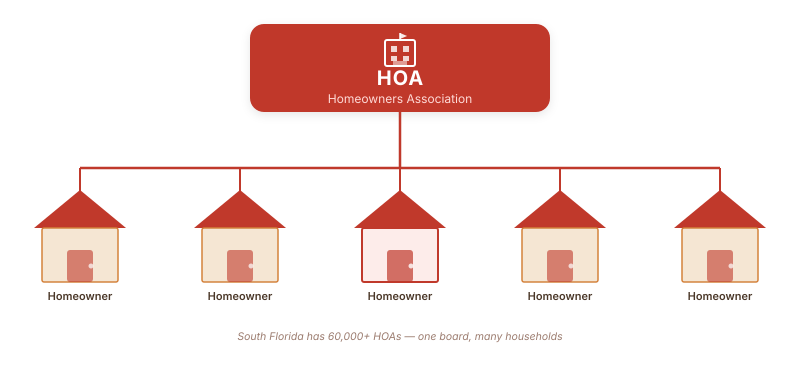

Plantation · HOA · South Florida
Can Your HOA Do That? A South Florida Dad's Guide — From the Inside
South Florida is the mecca of HOAs. There are more than 60,000 homeowners associations across Florida — and a huge chunk of them are right here in Broward. I found that out the hard way when my bank approved my mortgage, my closing date was set, and I still had to wait days for the HOA to approve my purchase application. Fast forward a few years: I joined the board of directors of my own HOA. Here's what I learned from the inside, backed by Florida Statute Chapter 720.

When I moved to South Florida, I had no idea how much power a homeowners association would have over my daily life. I had been through closings before — bank approval, inspections, title search, the whole thing. What I didn't expect was that after all of that, I'd still be sitting around waiting for a group of neighbors to decide whether I was allowed to buy the house. That was my introduction to South Florida HOA culture.
Since then, I've been on the other side of the table. I served on the board of directors of my HOA — and I can tell you that most of what homeowners believe about HOA authority is either partially wrong or based on outdated information. The governing document is Florida Statute Chapter 720. What your HOA can do, and what it thinks it can do, are often very different things.
Let me answer the four questions I get asked most often.
Can the HOA Reject a Buyer the Bank Already Approved?
Yes. The bank's approval and the HOA's approval have nothing to do with each other. They're measuring completely different things.
Your lender is asking: Can this person pay back this loan? Your HOA is asking: Does this person meet the criteria in our governing documents? Those two questions can produce two different answers.
Under Florida Statute Chapter 720, an HOA that has an approval process in its governing documents can run a background check, a credit check, and even conduct an interview. If the applicant doesn't meet their written criteria — income thresholds, criminal history standards, whatever is spelled out in the CC&Rs or bylaws — the HOA can reject the application.
When I was on the board, we had to review purchase applications. The process felt administrative — verify the forms are complete, confirm the applicant meets the criteria, vote. But it's a real gate. If you're buying in a community with HOA approval requirements, build extra time into your closing timeline. We're not a rubber stamp, and we don't move at lender speed.
Can the HOA Ban Rentals — Even If You've Always Rented?
This one is more complicated than most people think, and Florida law changed significantly in 2021.
Under Florida Statute 720.306(1)(h), if an HOA passes an amendment after July 1, 2021 that restricts or prohibits rentals, that amendment only applies to owners who:
- Acquired title to their property after the amendment passed, or
- Voted in favor of the amendment
In other words: if you already owned your home before the rental restriction was adopted and you didn't vote for it, you're generally grandfathered in. The HOA can't retroactively take away your right to rent.
There are two exceptions to this protection — and they're the ones that catch people off guard.
| Restriction Type | Grandfathering Protection? | Notes |
|---|---|---|
| Standard long-term rental ban (post-July 2021) | ✅ Yes — applies only to new buyers or those who voted yes | Existing owners who didn't vote for it are exempt |
| Short-term rental ban (6 months or less) | ❌ No — applies to everyone | Airbnb-style restrictions can apply to all owners |
| Frequent rental restriction (more than 3x per year) | ❌ No — applies to everyone | HOA can cap how many times per year you rent, regardless of when you bought |
Bottom line: if your HOA is trying to ban long-term rentals and you bought before the amendment, get a copy of the amendment date and your closing date. If your purchase predates the amendment and you didn't vote for it, you likely have an argument. If the restriction targets short-term or frequent rentals, the protection doesn't apply to you.
Can the HOA Fine You Because Your Roof Is Dirty?
Yes. In South Florida, this is one of the most common violation categories — and one of the most contentious. With our humidity and heat, roofs and exterior walls get algae and mildew stains fast. If your governing documents include exterior maintenance standards, the HOA can absolutely cite you for it.
But they have to follow a specific process under Chapter 720. They cannot just mail you a fine. The sequence required by Florida law is:
- Issue a written notice of violation
- Give you at least 14 days to cure the violation
- If you don't fix it, provide a separate notice of a fining hearing
- A fining committee of at least 3 members (who are not board members, their spouses, or co-residents) must approve the fine
- If you fix the issue before the hearing takes place, no fine can be imposed
The fine caps under Florida law: $100 per violation per day, not to exceed $1,000 in aggregate for any single continuous violation. If the fine would exceed $100, you're entitled to that committee hearing.
When I was on the board, exterior maintenance violations were the ones that escalated the most — not because the fines were high, but because homeowners felt embarrassed or targeted. The board's job is to apply the standards from the governing documents consistently. Which brings me to the last question.
Can the HOA Fine You But Not Your Neighbor for the Same Thing?
This is the question that makes the most people furious — and with good reason. The answer is: technically they can try, but it's a legally recognized defense that can defeat the enforcement action entirely.
Selective enforcement is when an HOA enforces a rule against one homeowner but tolerates the same violation by others. Florida courts under Chapter 720 recognize selective enforcement as a valid defense. If you can show that your neighbor has the same problem — same visible roof stain, same overgrown bushes, same fence violation — and the HOA has not cited them, you have an argument.
To use it successfully, you need to document it:
- Photos of the same violation at other properties, timestamped
- Evidence the HOA was aware of the other violations (prior emails, meeting minutes)
- A pattern — one example is thin; three examples is a pattern
From the board side, I can tell you that inconsistent enforcement is usually not malicious — it's operational. Boards are mostly volunteers. Violations are logged when they're reported or when board members drive the community and spot them. A board member who drives past the same four streets every time they do an inspection isn't going to have the same visibility across the whole community. That's reality. But the legal standard doesn't care about your excuse — it cares about the outcome. Inconsistent enforcement creates legal exposure for the HOA and a valid defense for the homeowner.
What HB 1203 (2024) Changed for Florida Homeowners
In July 2024, Florida passed HB 1203 — one of the more significant HOA reform laws in recent memory. If you haven't read about it, here are the parts that actually matter to most homeowners:
HB 1203 Key Changes — Effective July 1, 2024
- No interior control — HOAs cannot regulate or enforce rules about interior changes that are not visible from the street, adjacent property, or common areas
- Vegetable gardens allowed — HOAs cannot prohibit vegetable gardens or clotheslines that are not visible from the front of the property or adjacent lots
- Director education required — Board members must complete an education curriculum within 90 days of election and at least 4 hours of continuing education annually
- Criminal penalties — HOA officers, directors, and property managers who accept kickbacks now face criminal charges
- Denial must be in writing — Architectural and construction review committees must provide written notice of the specific rule or covenant they relied on when denying a request
The vegetable garden one is worth highlighting — I've seen this cause real friction in South Florida communities. If your HOA is still threatening fines for a backyard vegetable garden that isn't visible from the street, that's been illegal since July 2024. Push back.
The Thing Nobody Tells You About HOA Power
Here's what I learned sitting on the board: HOAs have significant power, but most homeowners don't know the limits of that power — and neither do a lot of board members. Governing documents that were written 20 years ago sometimes include provisions that conflict with current Florida law. When there's a conflict, the statute wins. The HOA's CC&Rs do not override Chapter 720.
If you're in a dispute with your HOA, request copies of the governing documents — the Declaration of Covenants, Conditions, and Restrictions (CC&Rs), the Bylaws, and any Rules and Regulations. Compare what they say to what the Florida Statutes actually allow. Most disputes I saw on the board could have been resolved in the first conversation if both sides understood the actual legal framework.
Florida also has a mandatory pre-litigation mediation requirement for HOA disputes — before either side can sue, they generally have to try arbitration through the state. That's a cheaper and faster path than a courtroom, and it's specifically designed for HOA conflicts.
Florida HOA Quick Reference
- Governing law: Florida Statute Chapter 720 (Homeowners' Association Act)
- Pre-litigation mediation required before suing your HOA
- Violation notice must give at least 14 days to cure
- Fine cap: $100/day per violation, $1,000 aggregate maximum
- Rental restriction amendments post-July 2021: only apply to new owners or those who consented
- Request governing docs: CC&Rs, Bylaws, and Rules & Regulations are public under Florida law
- Florida DBPR (Dept of Business and Professional Regulation) handles HOA complaints
The Broward HOA Reality
Broward County HOA fees jumped more than 56% between 2019 and 2023 — to an average of $613 per month for many communities. That's a significant monthly expense on top of your mortgage, insurance, and taxes. For that money, you're entitled to a board that follows the law, applies rules consistently, and treats homeowners with basic fairness.
Most boards are doing their best with volunteer time and limited resources. But "doing our best" is not a legal defense when a fine is applied selectively, a rental restriction is being enforced against someone who's grandfathered, or a purchase application is denied without proper process.
Knowing the statute doesn't make you difficult. It makes you informed. That's the whole point.